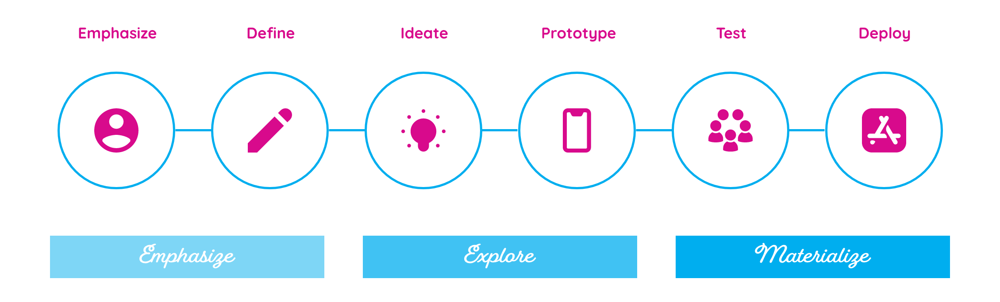
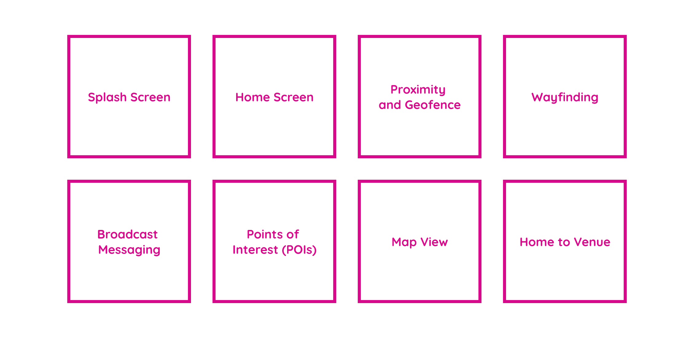

Design an app for Mount Sinai that will allow users to easily navigate their facilities. This app was developed at Phunware. I was the lead designer with a team of project managers and developers.
My Role
Requirements and Research
Stakeholder & Competitors
Wireframes
Low Fidelity & User Flow
Design
High Fidelity & Interactions
Challenge
The main challenge was to address the four pain points that the users typically encounter. This included getting lost on campus, finding building names, new naming convention changes, and finding restrooms.
Goals
Understanding the Campus
Quick access to find rooms and amenities
Logistical Ease
Easily navigate the campus
Process
The process followed is outlined below. This demostrates the thought process behind how I worked throughout the project.

Features

Wireframes & Flow Map
The wireframes were the start of the layout and determined where the content will be placed. Once the wireframes were defined I started to outline the flow of the app.
App
The final app reflected the Mount Sinai brand while incorporating the features they requested. Download the app on the App Store or Play Store.